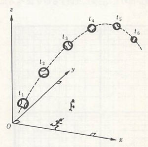
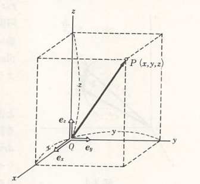

運動の表現方法
先ず物体の運動に関して、長さと時間の概念だけを使って理解できる。比較的単純な物理量から話を進めていくことにしょう。我々は間口と奥行きと高さを持った3次元空間の中に住んでいる。物体の運動もその中で起こっている。運動とは、物体の位置が時間とともに変化することであるから、ある運動を記述するためには、例えば以下の図のように直交する3本の座標軸を採って、それを基準として時々刻々における物体の位置を追いかけていけばよい。

ところで、われわれの目に映る物体は全て大きさを持っているから、この図にも示されているように、物体は並進運動（平行移動）の他にも恐らく変形を受けたり、その重心のまわりに回転運動を行ったりするであろう。そしてそれらの現象はいずれも、一応、原理的には、古典力学を用いて記述することができる性質のものである。だが、以下ではできるだけ議論を簡単にするために、そのような可能性には一先ず目をつぶり、しばらくの間、物体を質量だけを備えた点、すなわち質点（particle、point mass、material point）とみなしてしまうことにしよう。物体の大きさが無視できない場合については、以降考察する予定である。その際にまた改めて述べる予定ではあるが、一般に大きさのある物体はこのような質点の集まりとみなすこともできるし、また物体の重心と呼ばれる点の運動は、質点モデルによって正しく記述されることも知られる。したがって、実際の物体を質点で近似することは、古典力学の出発点として極めて重要なものである。 図のように空間に直交直線座標系を設定しよう。

原点Oから見た質点Pの位置はOを始点としてPを終点とするベクトル r を用いて表すことができる。これを質点Pの位置ベクトルという。その成分は、P点の座標 (x,y,z) として
$$ {\bm r}=(x,y,z) $$
で与えられる。ここで更に図に示されているように、それぞれ x、y、z 軸の正の方向に向かう単位の大きさのベクトル
$$ {\bm e_{x}}=(1,0,0)、 {\bm e_{y}}=(0,1,0)、 {\bm e_{z}}=(0,0,1) $$
を基本ベクトルとして導入すると、位置ベクトル r はまた、
$$ {\bm r}=x{\bm e_{x}}+y{\bm e_{y}}+z{\bm e_{z}} $$
と書くこともできる。この r の大きさ、すなわち原点から質点までの距離 r は
$$ r\equiv|{\bm r}|=\sqrt{x^2+y^2+z^2} $$
で与えられ、また r の方向がいわゆる方向余弦
$$ (l,m,n)=(x/r,y/r,z/r) $$
によって与えられることは既に諸君もご存じのことであろう。記号 ≡ は両辺が定義などにより恒等的に等しい場合にしばしば用いられる。 この本では基本ベクトルの大きさ（=1）を、単位を持たない数、すなわち無次元の量であると考えることにする。そうすると r は長さ（length）の単位、メートル（m）を用いて表される量であるから、r の各要素 x、y、z もまた長さの単位を持つことになる。これを よく知られた次元（dimension）の起動で表せば
$$ [r]=[x]=[y]=[z]=[L] $$
ということになる。ここで は長さの次元を表す記号である。このように基本ベクトルの大きさを無次元の量と考えておくと、同じ基本ベクトルを用いて様々な単位を持つベクトル量を書き下すことができて便利である。 質点Pが運動を行う場合には、その位置ベクトル r は時刻（time）t の関数となる。以下、このことを明瞭に表す必要があるときは、特に r(t) と記すことにする。さて、時刻 t で位置ベクトル r(t) なるA点にあった質点が、極く短い時間 Δt ののちに r(t+Δt) なるB点まで動いたとする。こんときの質点の変位（displacement）Δr は、以下の図に図示されたようなベクトル算法を用いて
$$ \Delta{\bm r}\equiv{\bm r}(t+\Delta t)-{\bm r}(t) $$
と書ける。

したがって、この時間帯における質点単位時間あたりの平均の変位は Δr/Δt である。今、時間幅 Δt を限りなくゼロに近づけた極限での、単位時間あたりの平均の変位を
$$ {\bm v}\equiv\frac{{\rm d}{\bm r}}{{\rm d}t}\equiv \lim_{\Delta t\to 0}\frac{{\bm r}(t+\Delta t)-{\bm r}(t)}{\Delta t} $$
と書けば、上図からも明らかなように、その方向はA点において引かれた質点の軌道に対する接線の方向に等しく、その大きさは軌道に沿っての質点の速さ（speed）に等しくなる。この v のことを質点の速度（velocity）の成分は
$$ {\bm v}\equiv(v_{x},v_{y},v_{z})= \left(\frac{{\rm d}x}{{\rm d}t},\frac{{\rm d}y}{{\rm d}t},\frac{{\rm d}z}{{\rm d}t}\right) $$
である。特に v = c （c：定ベクトル）のとき、この質点の運動はベクトル c の方向に向かう等速直線運動となる。 次に、速度が時間とともに変化する、より一般的な運動について考えよう。